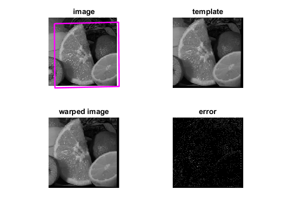

Image Alignment using ECC algorithm
This sample demostrates the use of the ECC image alignment algorithm. When one image is given, the template image is artificially formed by a random warp given the motion type. Otherwise supply both images. If input warp matrix is not specified, the identity transformation is used to initialize the algorithm.
Sources:
Contents
Options
INPUT_IMAGE = fullfile(mexopencv.root(), 'test', 'fruits.jpg'); LOAD_TEMPLATE = false; LOAD_MAT = false; MOTION_TYPE = 'Affine';
type of motion
MOTION_TYPE = validatestring(MOTION_TYPE, ... {'Translation', 'Euclidean', 'Affine', 'Homography'});
termination criteria (ECC iterations and convergnce epsilon)
CRIT = struct('type','Count+EPS', 'maxCount',50, 'epsilon',1e-4); if CRIT.maxCount > 200 warning('Too many iterations'); end
Input image
load input image
imgInput = cv.imread(INPUT_IMAGE, 'Grayscale',true);Template image
initialize or load template image
M0 = []; if LOAD_TEMPLATE % load an existing template image fmts = imformats(); filtspec = strjoin(strcat('*.', [fmts.ext]), ';'); [fn,fp] = uigetfile(filtspec, 'Select an image'); if fp==0, error('No file selected'); end imgTemplate = cv.imread(fullfile(fp,fn), 'Grayscale',true); else % create a template image by applying a random warp to input image imgInput = cv.resize(imgInput, [216 216]); opts = {'DSize',[200 200], 'Interpolation','Linear', 'WarpInverse',true}; switch MOTION_TYPE case 'Translation' M0 = [1 0 rand*10+10; 0 1 rand*10+10]; imgTemplate = cv.warpAffine(imgInput, M0, opts{:}); case 'Euclidean' theta = pi/30 + pi*randi([-2 2])/180; M0 = [cos(theta) -sin(theta) rand*10+10; sin(theta) cos(theta) rand*10+10]; imgTemplate = cv.warpAffine(imgInput, M0, opts{:}); case 'Affine' M0 = [1-(rand*0.1-0.05) rand*0.06-0.03 rand*10+10; rand*0.06-0.03 1-(rand*0.1-0.05) rand*10+10]; imgTemplate = cv.warpAffine(imgInput, M0, opts{:}); case 'Homography' M0 = [1-(rand*0.1-0.05) rand*0.06-0.03 rand*10+10; rand*0.06-0.03 1-(rand*0.1-0.05) rand*10+10; rand*2e-4+2e-4 rand*2e-4+2e-4 1]; imgTemplate = cv.warpPerspective(imgInput, M0, opts{:}); end display(M0) % ground truth end sz = size(imgTemplate);
M0 =
1.0196 0.0089 17.8664
-0.0236 1.0216 18.8430
Input warp matrix
initialize or load warp matrix
M = []; if LOAD_MAT % load from a MAT-file uiopen('load'); assert(~isempty(M), 'Failed to load warp matrix M'); if strcmp(MOTION_TYPE, 'Homography') assert(isequal(size(M), [3 3])); else assert(isequal(size(M), [2 3])); end else % identity matrix if strcmp(MOTION_TYPE, 'Homography') M = eye(3,3); else M = eye(2,3); end warning(['Performance Warning: Identity warp ideally assumes images ' ... 'of similar size. If the deformation is strong, the identity ' ... 'warp may not be a good initialization, and estimation may fail.']); end display(M)
Warning: Performance Warning: Identity warp ideally assumes images of similar
size. If the deformation is strong, the identity warp may not be a good
initialization, and estimation may fail.
M =
1 0 0
0 1 0
Estimate transformation
fprintf('Estimating "%s" transformation...\n', MOTION_TYPE); tic M = cv.findTransformECC(imgTemplate, imgInput, ... 'InputWarp',M, 'MotionType',MOTION_TYPE, 'Criteria',CRIT); toc display(M)
Estimating "Affine" transformation...
Elapsed time is 0.180881 seconds.
M =
2×3 single matrix
1.0195 0.0090 17.8705
-0.0235 1.0216 18.8507
compare against ground truth
if ~isempty(M0) err = norm(M - M0) end
err =
single
0.0088
Apply estimated transformation
warped image
opts = {'DSize',[sz(2) sz(1)], 'Interpolation','Linear', 'WarpInverse',true};
if strcmp(MOTION_TYPE, 'Homography')
imgWarped = cv.warpPerspective(imgInput, M, opts{:});
else
imgWarped = cv.warpAffine(imgInput, M, opts{:});
endcompare against template image
if ~mexopencv.isOctave() && mexopencv.require('vision') imgError = imfuse(imgTemplate, imgWarped, 'diff'); else imgError = abs(double(imgTemplate) - double(imgWarped)); imgError = imgError / max(imgError(:)); end
compute region boundary in input image corresponding to template image
pts = [1 1; sz(2) 1; sz(2) sz(1); 1 sz(1)]; % corners to warp (TL/TR/BR/BL) pts(:,3) = 1; % homogeneous coordinates if strcmp(MOTION_TYPE, 'Homography') pts = pts * M.'; else pts = pts * [M; 0 0 1].'; end pts = bsxfun(@rdivide, pts(:,1:2), pts(:,3));
show results
subplot(221), imshow(imgInput), title('image') line(pts([1:end 1],1), pts([1:end 1],2), 'Color','m', 'LineWidth',2) axis tight subplot(222), imshow(imgTemplate), title('template') subplot(223), imshow(imgWarped), title('warped image') subplot(224), imshow(imgError), title('error')